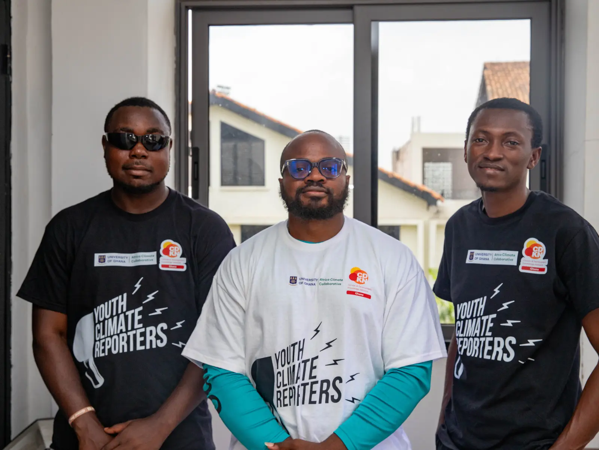

PA
Dr. Prince Ansah
Director

03The team
A multidisciplinary team across climate evidence, programme delivery, operations and public communication.
Climate work is relational work.
BTS brings together programme managers, technical operators and communicators around one practical question: what will help evidence become action?
The team works across disciplines while staying grounded in clarity, collaboration and locally relevant climate action.
Director
BTS Team
Technical Operations Lead
Project Manager
Project Manager
Communication Lead
Media Officer
Working culture
We value good evidence, direct collaboration and respect for the people whose lives give climate data its meaning.
Work with BTS